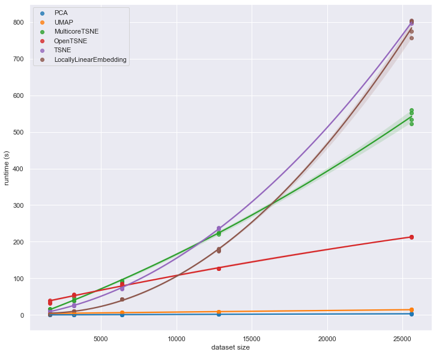

Feature engineering
Contents
4.1. Feature engineering#
4.1.1. Transforming two types of numeric features with Scikit-learn#
Standardization vs. Log Transforms: when to use one over the other?
A look at a simple histogram is enough: if a feature has a “general-shaped” distribution, standardization maps it to a normal distribution as closely as possible.
How? Subtracts the mean of the feature from each element and divides by the variance.
If a feature is skewed to either side, use a logarithmic transform like PowerTransformer.
It is the same as calling “np.log” on the feature but offers more functionality.
4.1.2. Model-based imputation techniques - KNN Imputer and Iterative Imputer#
Missing data imputation doesn’t stop at simple techniques like mean/median/mode filling. Real-world missing data is nasty. You gotta add a few missiles to your arsenal to deal with them.
For example, Sklearn provides two awesome model-based imputation estimators:
KNNImputer - classic KNN but for missing data. Data points are imputed by averaging the value of its n-neighbors or by taking their mode if categorical.
IterativeImputer - accepts any model as an estimater and models missing values as a function existing features. In other words, training data becomes all the rows without missing data and the test set is all those that are.
Obviously, there is much more to these algorithms, so I also wrote a comprehensive guide on how to use them: https://bit.ly/3xDHfZf
4.1.3. Use OrdinalEncoder instead of LabelEncoder#
Have you ever got annoyed that LabelEncoder transforms columns one at a time? Well, your anger isn’t justified because you have been using the wrong transformer.
To convert categorical columns that have inherent ordering (e.g. bad, medium, good) to numeric, people often use LabelEncoder.
Unlike most of other Sklearn transformers, it only works with one column at a time and can’t be inserted into pipelines. Why?
If you read its documentation, Sklearn states that LabelEncoder is only designed to convert target array (Y).
To convert multiple categorical features, you should use OrdinalEncoder, which works as expected👇
4.1.4. How to check the effectiveness of an imputation technique#
How do you check if an imputation method was effective?
The harder and more time-consuming way would be fitting a model before and after the imputation to see if it increases the score.
But there is a more statistically sound way of check this. And it is much faster.
Simply plot the KDE of the original unimputed distribution. Then, impute that distribution and plot its KDE once again on top of the previous plot.
The closer the new density curve comes to the unimputed one, the more effective it is.
What other methods do you use?
4.1.5. Encoding rare labels with RareLabelEncoder#
Often, when a categorical variable has a high cardinality (too many categories), many of the categories represent only a small proportion of the total.
Having too many classes with very few samples is noise. For ML models to generalize well for all classes, each class must have enough samples.
One solution to the problem is to group rare categories into a single category called “rare” or “other”. The “rarity” can be chosen by selecting a proportion threshold.
You can do this manually in Python but there is a better way. Using the feature-engine library, you can perform the operation using a Sklearn-like transformer.
Useful parameters of RareLabelEncoder:
tol: threshold
replace_with: custom text to replace rare categories
ignore_format: when True, the transformer will work on numerically-encoded features as well. By default, it only works on Pandas “other” or “category” data types.
Link to the transformer docs in the comments👇
RareLabelEncoder: https://bit.ly/3vfjNkv
4.1.6. UMAP vs. tSNE vs. PCA#
Which one is the fastest - PCA, tSNE or UMAP?
Each dimensionality reduction algorithm preserve the underlying structure of the data differently. But sometimes, you only care about reducing the dimensions of the dataset as fast as possible.
Below is a speed comparison of the three most-common reduction algorithms. As you can see, tSNE is orders of magnitude slower than others and PCA computes almost instantaneously.
However, I would advise to use UMAP for most of your use-cases, as it offers a nice middle-ground between performance and the quality of the reduction.
4.1.7. Speed comparison of the fastest dimensionality reduction algorithms#
Building on my earlier post this week, here is a more detailed comparison of the speed of the fastest dimensionality reduction algorithms.
As you can see, tough-old PCA needs almost the same execution time even if you increase the dataset size 5 times. As for the tSNEs, they are embarrassing.

Source: https://bit.ly/3JAN4fj